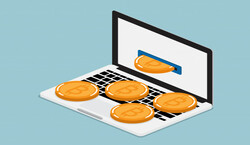
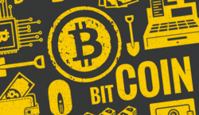
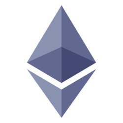

Una criptomoneda es una moneda digital diseñada para funcionar como medio de intercambio. Utiliza la criptografía para asegurar y verificar transacciones, así como para controlar la creación de nuevas unidades de una criptomoneda particular. Esencialmente, las criptomonedas son entradas limitadas en una base de datos que nadie puede cambiar a menos que se cumplan condiciones específicas. Existen miles de criptomonedas, la más popular es Bitcoin pero aquí vamos a contarte acerca de qué son las criptomonedas en general y cómo funcionan. Sigue leyendo para aprender más sobre el dinero digital del futuro y cómo entender su funcionamiento para que de esta manera puedeas utilizarlas de una mejor manera y puedas aprender a invertir en criptomonedas sabiamente.
En los sistemas de criptomonedas, se garantiza la seguridad, integridad y equilibrio de sus estados de cuentas (contabilidad) por medio de una red estructurada de agentes (transferencia de archivo segmentada o transferencia de archivo multifuente) que se verifican (desconfían) mutuamente llamados mineros, que son, en su mayoría, público en general y protegen activamente la red (el entramado) al mantener una alta tasa de procesamiento de algoritmos, con la finalidad de tener la oportunidad de recibir una pequeña propina, que se reparte de manera aleatoria.
Historia
Hubo muchos intentos por crear una moneda digital durante el boom tecnológico de los 90, con sistemas como Flooz, Beenz y DigiCash, que surgieron en el mercado, pero al final fracasaron. Entre las razones de sus fallas estuvieron los fraudes, problemas financieros e incluso fricciones entre los empleados de las empresas y sus jefes.
Todos estos sistemas se basaban en la confianza en intermediarios, lo cual significaba que había empresas detrás de ellos que verificaban y facilitaban las transacciones. Debido a las fallas de estas empresas, la creación de un sistema de efectivo digital se consideró una causa perdida durante mucho tiempo.
Luego, a principios de 2009, un programador anónimo o un grupo de programadores bajo el alias de “Satoshi Nakamoto” presentó Bitcoin, que fue descrito como un 'sistema de efectivo electrónico de igual a igual. . Se trataba de un sistema completamente descentralizado. Es decir, que no tenía servidores involucrados ni una autoridad central de control.
Minería
Los mineros son la parte más importante de cualquier red de criptomonedas. Y al igual que el comercio, la minería es una inversión. Básicamente, los mineros están proporcionando un servicio de teneduría de libros para sus respectivas comunidades. Aportan el poder de sus computadoras para resolver complicados acertijos criptográficos, lo cual es necesario para confirmar una transacción y registrarla en este libro público distribuido que denominamos Blockchain.
Una de las cosas interesantes de la minería es que la dificultad de los acertijos aumenta constantemente, lo que está estrechamente relacionado con el número de personas que intentan resolverlo. Así que, cuanto más popular se vuelve cierta criptomoneda, más gente trata de extraerla y, por ende, más difícil se vuelve el proceso.
Mucha gente ha hecho fortunas mediante la minería de Bitcoins. Anteriormente podías sacar beneficios sustanciales de la minería utilizando solo tu computadora o incluso una computadora portátil lo suficientemente potente . En estos días, la minería Bitcoin solo puede ser rentable si estás dispuesto a invertir en un hardware de minería de grado industrial. Esto, por supuesto, genera enormes facturas de electricidad además del precio de todo el equipo necesario.
Blockchain
Blockchain es una tecnología, también conocida como "cadena de bloques" y que ahora está en boca de todos gracias a Bitcoin ya que Blockchain es la tecnología que está detrás de la criptomoneda. Pero, ¿quién inventó Blockchain? Blockchain fue creada en 1991 por los científicos Stuart Haber y W. Scott Stornetta al introducir una solución computacionalmente práctica para los documentos digitales con sello de tiempo para que no pudieran ser modificados o manipulados.La definición de blockchain más básica sería: un registro compartido y digitalizado que no puede modificarse una vez que una transacción ha sido registrada y verificada. Todas las partes de la transacción, así como un número significativo de terceros, mantienen una copia del registro (es decir, la cadena de bloques), lo que significa que sería prácticamente imposible modificar cada copia del registro globalmente para falsificar una transacción.
Wallet
Una billetera digital, también conocida como billetera electrónica o e-Wallet, se refiere a un dispositivo electrónico, un servicio de banca móvil o una aplicación móvil que permite a una parte realizar transacciones electrónicas con otra parte que intercambia unidades de moneda digital por bienes y servicios. Esto puede incluir comprar artículos en línea con una computadora o usar un teléfono inteligente para comprar algo en una tienda. El dinero puede depositarse en la billetera digital antes de cualquier transacción o, en otros casos, la cuenta bancaria de un individuo puede vincularse a la billetera digital. Los usuarios también pueden tener su licencia de conducir, documento de identidad y otros documentos de identificación almacenados en la billetera. Las credenciales se pueden pasar a la terminal de un comerciante de forma inalámbrica a través de la comunicación de campo cercano (NFC por sus siglas en inglés). Cada vez más, las billeteras digitales se están usando no solo para transacciones financieras básicas, sino también para autenticar las credenciales del titular. Por ejemplo, una billetera digital podría verificar la edad del comprador a la tienda mientras compra alcohol. El sistema ya ha ganado popularidad en Japón, donde las billeteras digitales se conocen como "billeteras móviles".
Bitcoin
Bitcoin (BTC) es la primera moneda digital, usada y distribuida de forma electrónica. Bitcoin es una red descentralizada peer-to-peer (de igual-a-igual). Ninguna institución o persona controla su emisión, gasto o reserva. La producción de cada Bitcoin se mantiene de forma digital y la misma está elaborada bajo una política de emisión controlada en la que sólo existen 21 millones de unidades.
Bitcoin fue presentado por primera vez como un software de código abierto por un programador anónimo, o un grupo de programadores, bajo el alias de Satoshi Nakamoto en 2009. La crisis económica que estaba atravesando el sector financiero por la burbuja inmobiliaria y la respectiva decisión que tomaron los gobiernos de imprimir dinero inorgánico para rescatar a los bancos fue una de las principales motivaciones de Satoshi para crear la moneda y ello lo podemos constatar en la imagen que dejó grabada en el Bloque Génesis del Bitcoin.Todavía existen muchos rumores sobre la verdadera identidad del creador de BTC, sin embargo, todas las personas mencionadas en esos rumores han negado públicamente ser Nakamoto. El propio Nakamoto dijo una vez que era un hombre de 37 años que vivía en Japón. Sin embargo, debido a su perfecto inglés, las horas en las que participaba en los foros y su software no etiquetado en japonés, se presentan dudas razonables acerca de esto. Alrededor de mediados de 2010, Nakamoto pasó a otras cosas, dejando Bitcoin en manos de algunos miembros prominentes de la comunidad de BTC. También Satoshi nombró a Gavin Andresen desarrollador principal.
Ethereum
Ethereum es una plataforma open source, descentralizada a diferencia de otras cadenas de bloques, Ethereum puede hacer mucho más. Es programable, lo que significa que los desarrolladores pueden usarlo para crear nuevos tipos de aplicaciones. Estas aplicaciones descentralizadas (o "dapps") obtienen los beneficios de la criptomoneda y la tecnología blockchain. Son confiables y predecibles, lo que significa que una vez que se "cargan" en Ethereum, siempre se ejecutarán según lo programado. Pueden controlar los activos digitales para crear nuevos tipos de aplicaciones financieras. Se pueden descentralizar, lo que significa que ninguna entidad o persona los controla.2
En este momento, miles de desarrolladores de todo el mundo están creando aplicaciones en Ethereum e inventando nuevos tipos de aplicaciones, muchas de las cuales puede usar hoy en día:
a) Carteras de criptomonedas que le permiten realizar pagos baratos e instantáneos con ETH u otros activos.
b) Aplicaciones financieras que le permiten pedir prestado, prestar o invertir sus activos digitales.
c) Mercados descentralizados , que le permiten intercambiar activos digitales, o incluso intercambiar "predicciones" sobre eventos en el mundo real.
d) Juegos donde tienes activos en el juego e incluso puedes ganar dinero real.